수동으로 조절하기
풍량, 풍향, 온도, 공기 순환 모드 등 다양한 냉난방 설정을 조절하십시오.
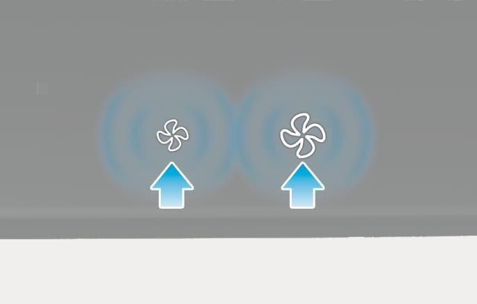
2C_AirconFanSpeed
풍량 조절 버튼을 눌러 풍량을 설정하십시오.
-
ĸ 을 누르면 풍량이 적어지고,ķ 을 누르면 풍량이 많아집니다.
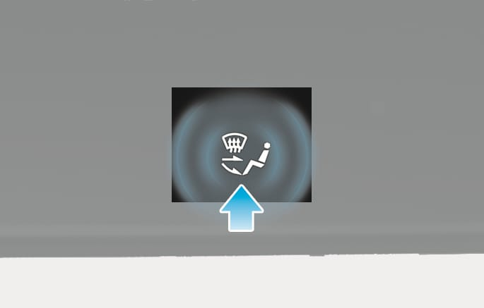
2C_AirconModeSelection
풍향 선택 버튼을 눌러 풍향 모드를 선택하십시오.
풍향 모드 알아두기
각 풍향 모드의 작동 방식은 다음과 같습니다.
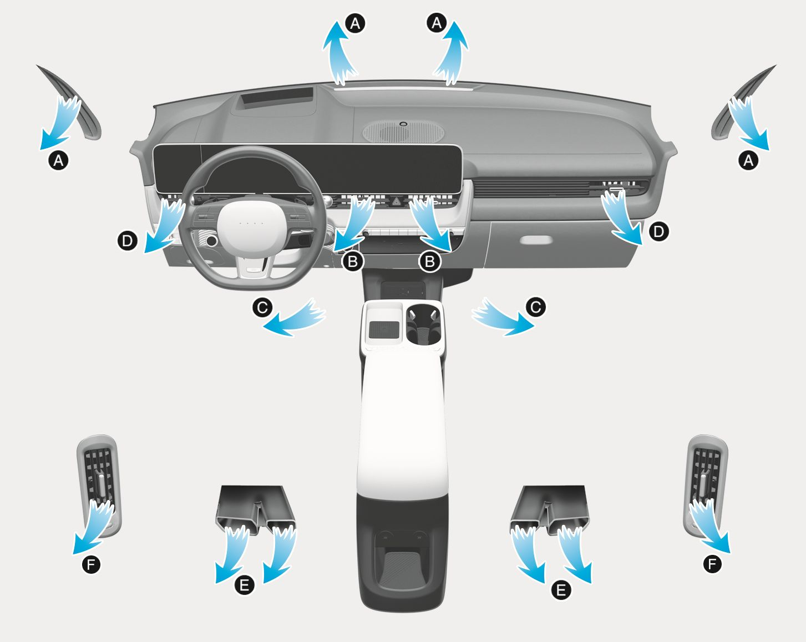
1C_AutoAirconModeSelectionOverview
|
기호/송풍구 |
설명/주요 송풍 위치 |
|
B, D, F |
냉방 시 권장 설정
|
|
B, C, D, E, F |
균형 있는 냉난방 설정
|
|
A, C, D, E |
난방 시 권장 설정
|
|
A, C, D, E |
앞유리 습기 제거 설정 (AC, 외기 유입 자동 선택)
|
-
냉난방을 효율을 높일 수 있는 계절별 풍향 설정은 다음과 같습니다.
-
겨울철 난방 시:
Å -
여름철 냉방 시:
ĭ
-
-
변경된 냉난방 설정은 시동을 껐다 걸어도 유지됩니다. 단, 배터리 케이블을 분리한 후에는 냉난방 설정이 초기화됩니다.
앞유리 서리 제거하기(A, D)
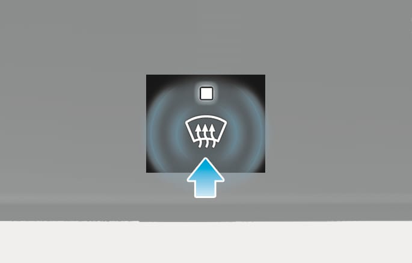
2C_AirconFrontDefrostButton
앞유리 서리 제거 버튼을 누르십시오.
-
버튼의 표시등이 켜지고 작동 상태 표시창에 작동 중인 기능이 표시됩니다.
-
외기 유입이 자동으로 선택되고, 외부 온도에 따라 에어컨도 자동으로 작동합니다.
-
앞유리 서리 제거 버튼을 다시 한번 누르면 버튼의 표시등이 꺼지고, 현재 기능을 선택하기 이전의 설정 상태로 되돌아갑니다.
송풍구 조절하기(B, D, F)
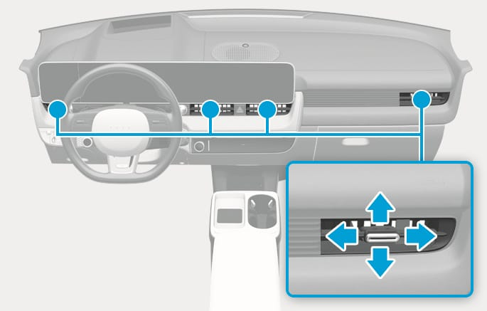
2C_FrontVent
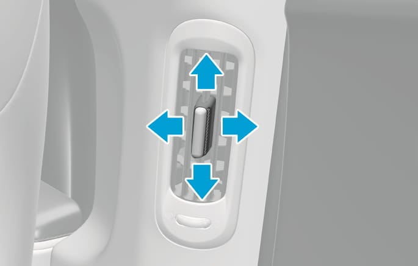
2C_RearVent
송풍구 레버를 상, 하, 좌, 우로 움직여 풍향을 조절하십시오.
-
송풍구 열림/닫힘 레버를 (
Á ) 위치 또는 (Â ) 위치로 밀면 송풍구를 닫거나 열 수 있습니다.
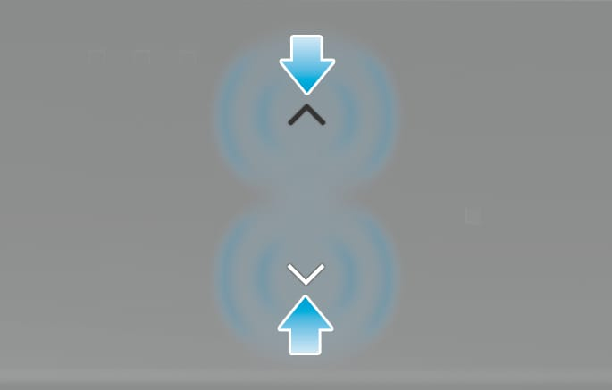
2C_AirconTempButton
온도 조절 버튼을 눌러 원하는 온도를 설정하십시오.
온도 표시 전환(℃ ↔ ℉)
작동 상태 표시창의 온도 표시를 섭씨(°C) 또는 화씨(℉) 단위로 전환할 수 있습니다.
-
인포테인먼트 시스템에서 설정 > 일반 > 단위 설정 > 온도 단위를 누른 후 단위를 선택하십시오.
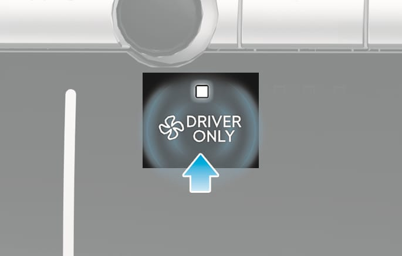
2C_DriverOnlyButton_2
동승자가 없을 때 운전석 개별 공조 기능으로 에너지를 절약할 수 있습니다.
운전석 개별 공조 버튼을 누르십시오.
-
버튼의 표시등이 켜지고, 운전석 송풍구로 풍량이 집중됩니다.
-
쾌적한 실내 환경을 위해, 운전석 개별 공조 기능을 사용하는 중에도 다른 송풍구의 풍량이 약하게 유지될 수 있습니다.
-
앞유리 서리 제거 기능을 사용하는 경우, 운전석 개별 공조 기능의 사용 여부와 관계없이 앞유리 양쪽 송풍구가 모두 작동합니다.
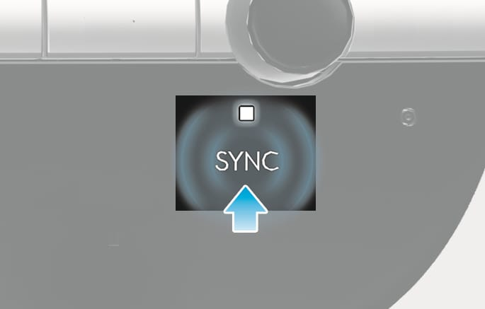
2C_AirconSYNCButton_2
운전석과 동일한 냉난방 설정을 동승석에 적용할 수 있습니다.
SYNC 버튼을 누르십시오.
-
버튼의 표시등이 켜지고, 운전석에 설정한 온도, 바람 방향 및 풍량이 동승석에 적용됩니다.
-
운전석과 동승석에 다른 설정을 사용하려면 SYNC 버튼을 다시 눌러 표시등을 끄십시오.
실내 순환
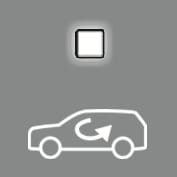
WL_RecirculationButton
외부 공기의 유입을 차단하려면 실내 순환 버튼을 누르십시오.
-
버튼의 표시등이 켜지면 외부 공기를 차단하고, 차량 내부의 공기를 순환합니다.
실내 순환 모드 사용 중 고속으로 주행하는 경우, 원활한 공기 순환을 위해 약간의 외부 공기가 실내로 유입될 수 있습니다.
반드시 필요한 경우가 아니라면 가급적 외기 유입 모드로 주행하고, 실내 순환 모드로 장시간 운전하지 마십시오. 유리창에 습기가 차기 쉬우며, 탑승자가 호흡하며 발생하는 이산화탄소가 실내에 축적되면 두통이나 졸음을 유발할 수 있습니다.
외기 유입
WL_AirIntakeButton
외부 공기가 실내로 유입되도록 하려면 실내 순환 버튼을 눌러 표시등을 끄십시오.
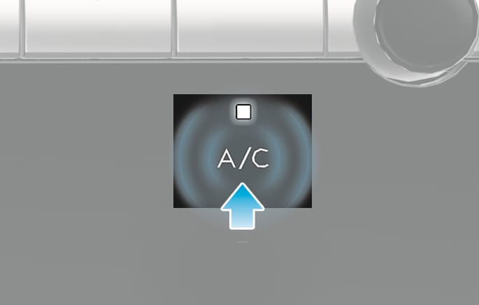
2C_AutoAirconButton_2
시동을 건 상태에서 A/C 버튼을 눌러 표시등을 켜십시오.
-
온도를 적절히 조절해 찬바람이 나오는지 확인하십시오.
-
에어컨을 끄려면 A/C 버튼을 다시 눌러 표시등을 끄십시오.
-
실내 순환 모드를 사용하면 냉방 효율을 높일 수 있습니다. 단, 장시간 주행해야 하는 경우, 적절한 외기 유입을 통해 실내 공기를 환기해야 합니다.
-
차량 아래로 물이 떨어지는 것은 에어컨 작동 시 발생하는 정상적인 현상입니다.
-
에어컨을 작동하기 전에 창문을 열어 차 안의 더운 공기를 식히면 냉방 효율을 높일 수 있습니다.
-
기온이 높을 때 에어컨을 강하게 작동하면 온도 차에 의해 유리창 바깥쪽에 습기가 발생할 수 있습니다. 이런 경우, 서리 제거 기능(
Ç )을 켜고 풍량을 줄이십시오. -
냉방 중 송풍구에서 안개처럼 보이는 공기가 나올 수 있습니다. 이것은 급속한 냉방 중 습기를 머금은 공기가 유입되며 발생하는 정상적인 현상입니다.
-
외부 습도가 높은 날 에어컨을 작동하는 경우 차량의 유리창을 닫으십시오. 온도 차로 인해 차량 내부와 송풍구 주변에 물방울이 맺히면, 차량 내부의 전자 장치가 손상될 수 있습니다.
-
냉난방에 사용되는 공기는 앞유리 앞쪽의 그릴을 통해 차량 내부로 유입됩니다. 그릴이 눈이나 낙엽 등 이물질로 막히지 않도록 주의하십시오.
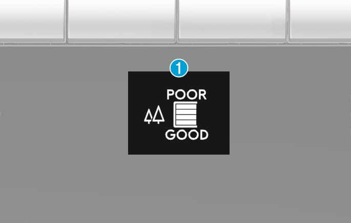
2C_AirCleanSystem
실내 공기의 청정도가 낮아지면 공기 청정 기능이 자동으로 작동합니다.
-
기능이 작동하면 상태 표시창에 작동(
ij ) 표시등과 실내 공기 상태(4단계)가 표시됩니다(1). -
기능 작동 중에는 실내 순환(내기) 모드에서 에어컨이 작동하고 풍량이 증가합니다.
-
공기 청정이 완료되면 기능이 자동으로 꺼집니다.
-
차량에 장착된 미세 먼지 센서는 실내의 미세 먼지 농도를 감지해 실내 공기 상태를 표시하고 공기 청정 기능을 작동합니다.
-
공기 청정 모드의 효과를 높이기 위해 공조 장치용 에어필터를 12개월마다 교체하십시오.
-
다음과 같은 경우로 공조 표시창의 실내 미세 먼지 농도가 '좋음' 수준이 안 될 때는 공조 장치용 에어필터를 매 12개월 보다 더 자주 교체하십시오.
-
대기 오염이 심한 도시 지역이나 먼지가 많은 비포장도로 등을 자주 주행하는 경우
-
미세 먼지가 나쁜 날이 장기간 지속될 때
-
-
공기 청정 모드 성능을 최상으로 유지하기 위해 품질과 성능이 적합한 공조 장치용 에어필터를 사용하십시오. 순정 부품은 품질과 성능을 당사가 보증하는 부품입니다.
-
작동 상태 표시창에 표시되는 공기 상태는 현재 실내의 먼지 농도를 나타내므로, 외부 대기의 먼지 농도를 나타내는 환경부 제공 수치와 다릅니다.
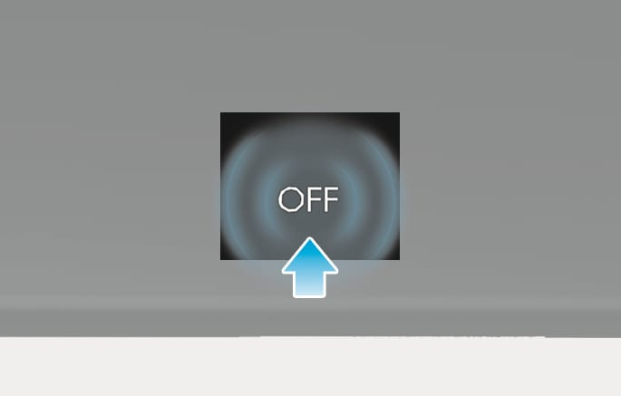
2C_AutoAirconOffButton
설정된 냉난방 기능을 끄려면 작동 정지(OFF) 버튼을 누르십시오.
-
선택한 기능이 꺼지고 외기 유입 모드가 자동으로 선택됩니다.
-
냉난방 기능을 끈 후에도 풍향과 내기/외기 모드 선택 기능은 조절할 수 있습니다.
에어컨과 관련된 이상이 발견되는 경우, 당사 직영 하이테크센터나 블루핸즈에서 차량을 점검하십시오.
차량에 적용된 R-1234yf 냉매는 기존 R-134a 냉매에 비해 환경 친화적인 물질이며, 지구온난화 현상에 대한 영향을 크게 줄일 수 있습니다.
-
냉매는 고압 상태의 가연성 물질입니다. 정비 자격을 취득한 정비사가 차량의 에어컨을 정비하도록 하십시오.
-
차량을 정비할 때는 반드시 당사가 지정한 신냉매 R-1234yf와 냉동유를 주입하십시오. 당사에서 지정하지 않은 냉매와 냉동유를 사용할 경우, 냉방 성능이 저하되고 차량의 에어컨 시스템에 심각한 손상을 줄 수 있습니다. 이로 인해 발생한 문제는 보증받을 수 없습니다.
-
냉매는 적절한 장비를 이용해 충전하거나 회수해야 합니다.
-
냉매를 대기로 직접 방출하는 경우 인명피해 및 환경 오염이 발생할 수 있습니다.
-
경고에 수록된 지시사항을 따르지 않는 경우 심각한 인명피해가 발생할 수 있습니다.
-